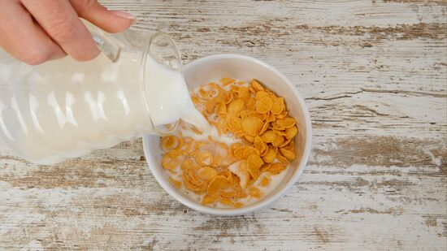

I ate a bowl of cereal
Just being in the kitchen ...
Is eating a bowl of cereal cheating?
What would happen if I just ate cereal?
Is it okay to eat a bowl of cereal?
Is Eating Cereal for Dinner Bad...
Is it a good idea to eat a bowl of cereal every morning...
Yes. Eating one bowl of cereal a day can be healthy.
Yes, a bowl of cereal with milk is tasty easy breakfast.
Is it okay to eat 3 bowls of cereal at night?
I just finished an entire box of cereal...
I just ate a bowl of cereal.
World's Most Boring I just ate a bowl of cereal.
The cereal tastes good, but how was the bowl?
Just ate my first bowl of cereal in about a year. We will see ...
I Ate Nothing but Cereal for a Week.
I ate a bowl of cereal
I ate a bowl of cereal at 5:00a.m.
Is Cereal Healthy? 8 Side Effects of Eating It Every Day